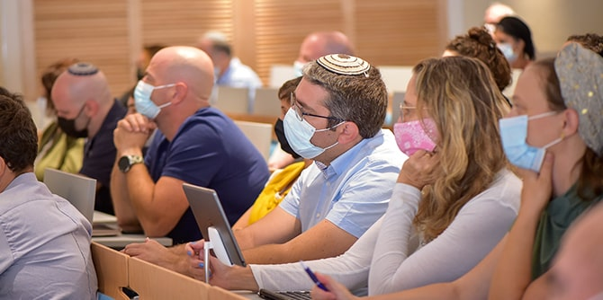
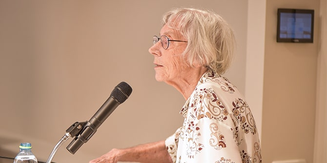
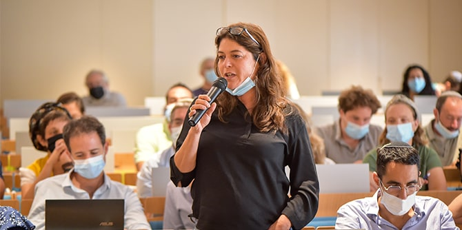

צילום: נוה בן-שמואל
"תוכנית הלימודים שלנו יושבת על כמה צירים ומתחים רעיוניים. הבוקר אבקש להתייחס לשניים עיקריים מתוכם: הראשון הוא המתח בין מסורת למודרנה או בין שימור לשינוי. אחד האתגרים הכי גדולים העומדים לפתחנו הוא היכולת להבחין נכון בין הראוי לשימור ובין הנדרש לשינוי", אמר
דני בר גיורא, מנהל בית ספר מנדל למנהיגות חינוכית בדברי הברכה שלו לעמיתות ועמיתי שני המחזורים. "המתח השני קשור באופן עמוק לתקופה המאתגרת שבה אנו נתונים, והוא המתח בין היכולת לשאול שאלות קשות ונוקבות לבין היכולת להישאר אדם מאמין ואופטימי. היכולת הזו חשובה שבעתיים לאנשי חינוך, הלוקחים אחריות ומובילים בתי ספר ומערכות חינוך גדולות".
משה ויגדור, מנכ"ל קרן מנדל-ישראל, בירך את העמיתים על פתיחת שנת הלימודים וציין לטובה את תפקודו של בית הספר לאורך כל תקופת הקורונה. ויגדור הוסיף: "לפני שבוע ציינו את יום הולדתו המאה של מורט מנדל, מייסד הקרן, שנפטר לפני שנתיים. מורט מאד נוכח, עדיין, בכל מה שאנחנו עושים, ממש בכל יום ויום".
 צילום: נוה בן-שמואל
את הרצאת הפתיחה של שנת הלימודים נשאה שופטת בית המשפט העליון בדימוס
דליה דורנר, שכיהנה גם כנשיאת מועצת העיתונות והתקשורת בישראל והמכון הישראלי לעיתונות עד לאחרונה. דורנר שוחחה עם העמיתים על הדמוקרטיה בישראל בהיעדרה של חוקה ועל השלכותיו של מצב זה על המציאות בארץ.
לבית ספר מנדל למנהיגות חינוכית מתקבלים מדי שנה כעשרים עמיתים ועמיתות בעלי יכולת עשייה מוכחת, כישורים אינטלקטואליים גבוהים ומחויבות להוביל שינוי למען שיפור המציאות החינוכית והחברתית בישראל. הלימודים בבית הספר, מיזם משותף לקרן מנדל ולמשרד החינוך, נמשכים שנתיים ובמהלכם העמיתים מפתחים את חזונם האישי והמקצועי תוך העמקה והרחבה של הידע המקצועי שלהם ותרגומו לתוכנית פעולה בת-קיימא לתרומה בשדה החינוך והחברה בישראל.
צילום: נוה בן-שמואל
{kind=link}
{kind=link}
{kind=link}